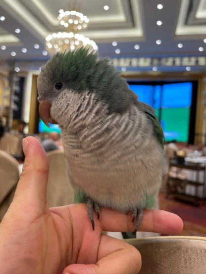
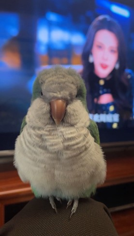
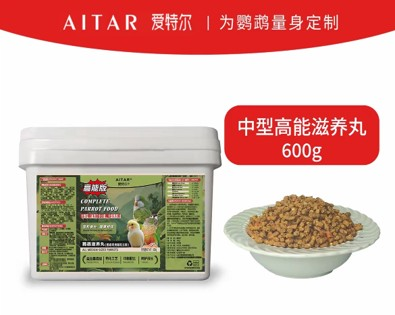
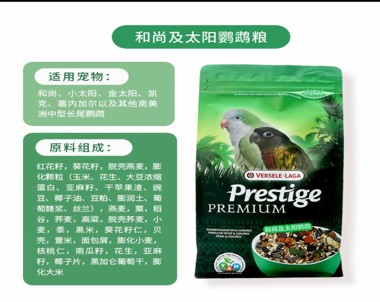
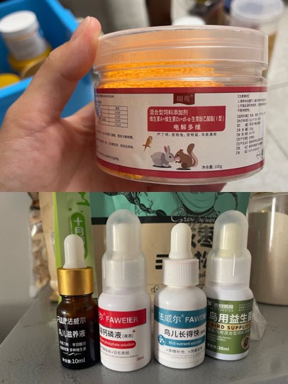

珊瑚蓝 · 网红亲人鸟
颜值清爽的可爱小精灵。福康是一只珊瑚蓝和尚鹦鹉，羽毛呈现出柔和的蓝灰色调，与常见的绿色和尚鹦鹉截然不同。珊瑚蓝是和尚鹦鹉中非常受欢迎的变异色，整体色调淡雅清新，胸腹部带有浅灰白渐层，翅膀内侧透着淡淡的蓝绿色光泽，给人一种温柔干净的视觉感受。搭配圆润的身形和灵动的眼神，福康无论站在哪里都像一个小艺术品。


福康性格非常粘人，喜欢待在主人身边，会主动飞到肩膀上蹭蹭撒娇，是一只十足的"跟屁虫"小鹦鹉。
相比其他中小型鹦鹉，福康的情绪非常稳定，不容易受惊，也很少无故尖叫，是一只让人安心的陪伴鸟。
福康充满好奇心，喜欢探索新玩具和新环境，每天都有用不完的精力，给家里带来无限欢乐。
和尚鹦鹉以聪明著称，福康更是其中的佼佼者。新词汇、新指令很快就能掌握，学习效率令人惊叹。
和尚鹦鹉是中小型鹦鹉中开口率最高的品种之一，福康2.5个月就开始说话，这在鹦鹉中非常少见。
福康非常愿意与人互动，不管是学语、玩游戏还是简单的日常陪伴，都能与主人建立深厚的情感联系。



定期用柠檬水给福康洗澡，可以帮助去除羽毛上的污垢，同时柠檬的天然成分有助于保持羽毛光泽和皮肤健康。
夏天注意通风降温，避免阳光直射；冬天要做好保温措施，室温保持在20-28°C之间，防止受凉感冒。
保持笼舍清洁是预防疾病的关键。每两天彻底清理一次笼子，更换垫纸，清洗食盆水盆，定期消毒玩具和栖架。
鹦鹉是非常需要社交的动物，每天至少陪伴福康1-2小时，多互动、多说话，让它感受到关爱，避免产生拔毛等抑郁行为。
和尚鹦鹉学语最好的阶段是3-6个月，福康从2个半月开始接回家，适应环境后从简单词汇开始教：日常用语（你好、妈妈、早上好等），生活场景词（吃饭），趣味指令，语调模仿，都是普通话，还有一些环境关联词……3-6个月开始练习发音，初期可能被误认为噪音，还会摇头晃脑，需要耐心引导！初期需建立信任感关系，待适应人与环境后再进行语言训练，重复训练，最好固定时间，教些清晰词汇「你好、吃饭、妈妈、哥哥、姐姐」之类！中小型鹦鹉中和尚是有组织短语模仿的，只是发音会有点含糊。每一只学习与发音清晰度因鸟而异。